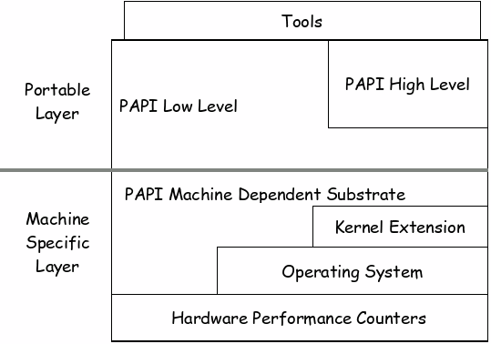

PAPI User’s Guide Version 3.5.0
PAPI USER’S GUIDE
PAPI USER’S GUIDE 1
ORGANIZATION OF THIS DOCUMENT 4
C AND FORTRAN CALLING INTERFACES 4
C AND FORTRAN CALLING INTERFACES 9
WHAT IS THE HIGH-LEVEL API? 17
INITIALIZING THE HIGH-LEVEL API 17
READING, ACCUMULATING, AND STOPPING COUNTERS 20
INITIALIZATION OF THE LOW-LEVEL API 22
ADDING EVENTS TO AN EVENT SET 24
STARTING, READING, ADDING, AND STOPPING EVENTS IN AN EVENT SET 26
RESETTING EVENTS IN AN EVENT SET 27
REMOVING EVENTS IN AN EVENT SET 28
EMPTYING AND DESTROYING AN EVENT SET 29
GETTING AND SETTING OPTIONS 33
USING PAPI WITH MULTIPLEXING 50
USING PAPI WITH PARALLEL PROGRAMS 53
BEGINNING OVERFLOWS IN EVENT SETS 58
WHAT IS STATISTICAL PROFILING? 60
DATA AND INSTRUCTION ADDRESS RESTRICTION 63
The papi_native_avail Utility 67
CONVERTING ERROR CODES TO ERROR MESSAGES 69
This document is intended to provide the PAPI user with a discussion of how to use the different components and functions of PAPI. The intended users are application developers and performance tool writers who need to access performance data to tune and model application performance. The user is expected to have some level of familiarity with either the C or Fortran programming language.
This section provides an introduction to PAPI by describing the project, its motivation, and its architecture.
This section provides an installation guide for PAPI. It states the necessary steps in order to install PAPI on the various supported operating systems.
This section states the header files in which function calls are defined and the form of the function calls for both the C and Fortran calling interfaces. Also, it provides a table that shows the relation between certain pseudo-types and Fortran variable types.
This section provides an explanation of events as well as an explanation of native and preset events. The preset query and translation functions are also discussed in this section. There are code examples using native events, preset query, and preset translation with the corresponding output.
This section discusses the high-level and low-level interfaces in detail. The initialization and functions of these interfaces are also discussed. Code examples along with the corresponding output are included as well.
This section explains the PAPI functions associated with obtaining real and virtual time from the platform’s timers. Code examples along with the corresponding output are included as well.
This section explains the PAPI functions associated with obtaining hardware and executable information. Code examples along with the corresponding output are included as well.
This section discusses the advanced features of PAPI, which includes multiplexing, threads, MPI, overflows, and statistical profiling. The functions that are use to implement these features are also discussed. Code examples along with the corresponding output are included as well.
This section discusses the various negative error codes that are returned by the PAPI functions. A table with the names, values, and descriptions of the return codes are given as well as a discussion of the PAPI function that can be used to convert error codes to error messages along with a code example with the corresponding output.
This section provides information on two PAPI mailing lists for the users to ask various questions about the project.
These appendices provide various listings and tables, such as: a table of preset events and the platforms on which they are supported, a table of PAPI supported tools, more information on native events, multiplexing, overflow, and etc.
handle_error(1)
A function that passes the argument of 1. The user should provide this function to handle errors.
PAPI is an acronym for Performance Application Programming Interface. The PAPI Project is being developed at the University of Tennessee’s Innovative Computing Laboratory in the Computer Science Department. This project was created to design, standardize, and implement a portable and efficient API (Application Programming Interface) to access the hardware performance counters found on most modern microprocessors.
Hardware counters exist on every major processor today, such as Intel Pentium, Core, IA-64, AMD Opteron, and IBM POWER series. These counters can provide performance tool developers with a basis for tool development and application developers with valuable information about sections of their code that can be improved. However, there are only a few APIs that allow access to these counters, and many of them are poorly documented, unstable, or unavailable. In addition, performance metrics may have different definitions and different programming interfaces on different platforms.
These considerations motivated the development of the PAPI Project. Some goals of the PAPI Project are as follows:
To provide a solid foundation for cross platform performance analysis tools
To present a set of standard definitions for performance metrics on all platforms
To provide a standardize API among users, vendors, and academics
To be easy to use, well documented, and freely available
T
he
Figure below shows the internal design of the PAPI
architecture. In this figure, we can see the two layers of the
architecture:
The Portable Layer consists of the API (low level and high level) and machine independent support functions.
The Machine Specific Layer defines and exports a machine independent interface to machine dependent functions and data structures. These functions are defined in the substrate layer, which uses kernel extensions, operating system calls, or assembly language to access the hardware performance counters. PAPI uses the most efficient and flexible of the three, depending on what is available.
PAPI strives to provide a uniform environment across platforms. However, this is not always possible. Where hardware support for features, such as overflows and multiplexing is not supported, PAPI implements the features in software where possible. Also, processors do not support the same metrics, thus you can monitor different events depending on the processor in use. Therefore, the interface remains constant, but how it is implemented can vary. Throughout this guide, implementation decisions will be documented where it can make a difference to the user, such as overhead costs, sampling, and etc.
On some of the systems that PAPI supports, you can install PAPI right out of the box without any additional setup. Others require drivers or patches to be installed first.
Because installation instructions vary from platform to platform, please find your particular Operating System and hardware section in the /papi/INSTALL.txt file for current information on exactly how to install PAPI for your configuration.
PAPI is written in C. The function calls in the C interface are defined in the header file, papi.h and consist of the following form:
<returned data type> PAPI_function_name(arg1, arg2,…)
The function calls in the Fortran interface are defined in the header file, fpapi.h and consist of the following form:
PAPIF_function_name(arg1, arg2, …, check)
As you can see, the C function calls have equivalent Fortran function calls (PAPI_<call> becomes PAPIF_<call>). This is generally true for most function calls, except for the functions that return C pointers to structures, such as PAPI_get_opt and PAPI_get_executable_info, which are either not implemented in the Fortran interface, or implemented with different calling semantics. In the function calls of the Fortran interface, the return code of the corresponding C routine is returned in the argument, check.
For most architectures, the following relation holds between the pseudo-types listed and Fortran variable types:
|
Pseudo-type |
Fortran type |
Description |
|
C_INT |
INTEGER |
Default Integer type |
|
C_FLOAT |
REAL |
Default Real type |
|
C_LONG_LONG |
INTEGER*8 |
Extended size integer |
|
C_STRING |
CHARACTER*(PAPI_MAX_STR_LEN) |
Fortran string |
|
C_INT FUNCTION |
EXTERNAL INTEGER FUNCTION |
Fortran function returning integer result |
Array arguments must be of sufficient size to hold the input/output from/to the subroutine for predictable behavior. The array length is indicated either by the accompanying argument or by internal PAPI definitions.
Subroutines accepting C_STRING as an argument are on most implementations capable of reading the character string length as provided by Fortran. In these implementations, the string is truncated or space padded as necessary. For other implementations, the length of the character array is assumed to be of sufficient size. No character string longer than PAPI_MAX_STR_LEN is returned by the PAPIF interface.
Events are occurrences of specific signals related to a processor’s function. Hardware performance counters exist as a small set of registers that count events, such as cache misses and floating point operations while the program executes on the processor. Monitoring these events facilitates correlation between the structure of source/object code and the efficiency of the mapping of that code to the underlying architecture. Each processor has a number of events that are native to that architecture. PAPI provides a software abstraction of these architecture-dependent native events into a collection of preset events that are accessible through the PAPI interface.
Native events comprise the set of all events that are countable by the CPU. There are generally far more native events available than can be mapped onto PAPI preset events. Even if no preset event is available that exposes a given native event, native events can still be accessed directly. To use native events effectively you should be very familiar with the particular platform in use. PAPI provides access to native events on all supported platforms through the low-level interface. Native events use the same interface as used when setting up a preset event, but since a PAPI preset event definition is not available for native events, a native event name must often be translated into an event code before it can be used.
Native event codes and names are platform dependent, so native codes for one platform are not likely to work for any other platform. To determine the native events for your platform, see the native event lists for the various platforms in the processor architecture manual. Every attempt is made to keep native event names used by PAPI as similar as possible to those used in the vendor documentation. This is not always possible. The utility code util/papi_native_avail provides insight into the names of the native events for a specific platform.
Native events are specified as arguments to the low-level function, PAPI_add_event in a manner similar to adding PAPI preset events. In the following code example, a native event name is converted to an event code and added to an eventset by using PAPI_add_event:
#include <papi.h>
#include<stdio.h>
main()
{
int retval, EventSet = PAPI_NULL;
unsigned int native = 0x0;
PAPI_event_info_t info;
/* Initialize the library */
retval = PAPI_library_init(PAPI_VER_CURRENT);
if (retval != PAPI_VER_CURRENT) {
printf(“PAPI library init error!\n”);
exit(1);
}
if (PAPI_create_eventset(&EventSet) != PAPI_OK)
handle_error(1);
/* Find the first available native event */
native = NATIVE_MASK | 0;
if (PAPI_get_event_info(native, &info) != PAPI_OK) {
if (PAPI_enum_event(&native, 0) != PAPI_OK)
handle_error(1);
}
/* Add it to the eventset */
if (PAPI_add_event(EventSet, native) != PAPI_OK)
handle_error(1);
}
For more code examples using native events, see ctests/native.c and util/native_avail.c in the papi source distribution.
Preset events, also known as predefined events, are a common set of events deemed relevant and useful for application performance tuning. These events are typically found in many CPUs that provide performance counters and give access to the memory hierarchy, cache coherence protocol events, cycle and instruction counts, functional unit, and pipeline status. Furthermore, preset events are mappings from symbolic names (PAPI preset name) to machine specific definitions (native countable events) for a particular hardware resource. For example, Total Cycles (in user mode) is PAPI_TOT_CYC. Also, PAPI supports presets that may be derived from the underlying hardware metrics. For example, Total L1 Cache Misses (PAPI_L1_TCM) might be the sum of L1 Data Misses and L1 Instruction Misses on a given platform. A preset can be either directly available as a single counter, derived using a combination of counters, or unavailable on any particular platform.
The PAPI library names approximately 100 preset events, which are defined in the header file, papiStdEventDefs.h. For a given platform, a subset of these preset events can be counted though either a simple high-level programming interface or a more complete C or Fortran low-level interface. For a representative list of all the preset events on some supported platforms, visit the PAPI web page: http://icl.cs.utk.edu/projects/papi/presets.html. Note that processors and software are revised over time, and this list may not be up to date. To determine exactly which preset events are available on a specific platform, run util/papi_avail.c in the papi source distribution.
The exact semantics of an event counter are platform dependent. PAPI preset names are mapped onto available events so as to map as many countable events as possible on different platforms. Due to hardware implementation differences, it is not necessarily feasible to directly compare the counts of a particular PAPI preset event obtained on different hardware platforms.
The following low-level functions can be called to query about the existence of a preset or native event (in other words, if the hardware supports that certain event), and to get details about that event:
C:
PAPI_query_event(EventCode)
PAPI_get_event_info(EventCode, &info)
PAPI_enum_event(&EventCode, modifier)
Fortran:
PAPIF_query_event(EventCode, check)
PAPIF_get_event_info(EventCode, symbol, longDescr, shortDescr, count, note, flags, check)
PAPIF_enum_event(&EventCode, modifier, check)
EventCode -- a defined event, such as PAPI_TOT_INS.
symbol -- the event symbol, or name, such as the preset name, PAPI_BR_CN.
longDescr -- a descriptive string for the event of length less than PAPI_MAX_STR_LEN.
shortDescr -- a short descriptive string for the event of length less than 18 characters.
count -- zero if the event CANNOT be counted.
note -- additional text information about an event (if available).
flags -- provides additional information about an event, e.g., PAPI_DERIVED for an event derived from 2 or more other events.
modifier -- modifies the search criteria; for preset events, returns all events or only available events; for native events, the definition is platform dependent.
PAPI_query_event asks the PAPI library if the preset or native event can be counted on this architecture. If the event CAN be counted, the function returns PAPI_OK. If the event CANNOT be counted, the function returns an error code.
PAPI_get_event_info asks the PAPI library for a copy of an event descriptor. This descriptor can then be used to investigate the details about the event. In Fortran, the individual fields in the descriptor are returned as parameters.
PAPI_enum_event asks the PAPI library to return an event code for the next sequential event based on the current event code and the modifier. This function can be used to enumerate all preset or native events on any platform. See util/papi_avail.c or util/papi_native_avail.c for details.
#include <papi.h>
#include <stdio.h>
main()
{
int EventSet = PAPI_NULL;
unsigned int native = 0x0;
int retval, i;
PAPI_preset_info_t info;
PAPI_preset_info_t *infostructs;
/* Initialize the library */
retval = PAPI_library_init(PAPI_VER_CURRENT);
if (retval != PAPI_VER_CURRENT) {
fprintf(stderr,"PAPI library init error!\n");
exit(1);
}
/* Check to see if the preset, PAPI_TOT_INS, exists */
if (PAPI_query_event (PAPI_TOT_INS) != PAPI_OK) {
fprintf (stderr,"No instruction counter? How lame.\n");
exit(1);
}
/* Get details about the preset, PAPI_TOT_INS */
if (PAPI_get_event_info(PAPI_TOT_INS,&info) != PAPI_OK) {
fprintf (stderr,"No instruction counter? How lame.\n");
exit(1);
}
if (info.count>0)
printf ("This event is available on this hardware.\n");
if (info.flags & PAPI_DERIVED)
printf ("This event is a derived event on this hardware.\n");
/* Count the number of available preset events between
PAPI_TOT_INS and the end of the preset list */
retval = 0;
i = PAPI_TOT_INS;
while (PAPI_enum_event(&i, TRUE) == PAPI_OK) {
retval++;
}
This event is available on this hardware.
In the above code example, PAPI_query_event is used to see if a preset (PAPI_TOT_INS) exists, PAPI_get_event_info is used to query details about the event, and PAPI_enum_event is used to count the number of events in the preset list after this preset.
On success, all three of these functions return PAPI_OK, and on error, a non-zero error code is returned.
A preset or native event can be referenced by name or by event code. Most PAPI functions require an event code, while most user input and output is in terms of names. Two low-level functions are provided to translate between these formats:
C:
PAPI_event_name_to_code(EventName, EventCode)
PAPI_event_code_to_name(EventCode, EventName)
Fortran:
PAPIF_event_name_to_code(EventName, EventCode, check)
PAPIF_event_code_to_name(EventCode, EventName, check)
EventCode -- a preset or native event of integer type, such as PAPI_TOT_INS.
EventName -- the event name string, such as the preset name, “PAPI_BR_CN”.
Note that the preset does not actually have to be available on a given platform to call these functions. Native event names are platform specific and where feasible match those given in the vendor documentation.
PAPI_event_name_to_code is used to translate an ASCII PAPI preset or native event name into an integer PAPI event code.
PAPI_event_code_to_name is used to translate an integer PAPI event code into an ASCII PAPI preset or native event name.
Using PAPI_event_code_to_name in conjunction with PAPI_enum_event is a good way to explore the names of native events on a specific platform, as shown in the following code example:
#include <papi.h>
#include <stdio.h>
main()
{
int EventCode, retval;
char EventCodeStr[PAPI_MAX_STR_LEN];
/* Initialize the library */
retval = PAPI_library_init(PAPI_VER_CURRENT);
if (retval != PAPI_VER_CURRENT) {
fprintf(stderr, “PAPI library init error!\n”);
exit(1);
}
EventCode = 0 | NATIVE_MASK;
do {
/* Translate the integer code to a string */
if (PAPI_event_code_to_name(EventCode, EventCodeStr) == PAPI_OK)
/* Print all the native events for this platform */
printf("Name: %s\nCode: %x\n", EventCodeStr, EventCode);
} while (PAPI_enum_event(&EventCode, 0) == PAPI_OK);
}
Name: DATA_MEM_REFS
Code: 40000000
Name: DCU_LINES_IN
Code: 40000001
Name: DCU_M_LINES_IN
Code: 40000002
.
.
Name: SEG_REG_RENAMES_TOT
Code: 40000078
Name: RET_SEG_RENAMES
Code: 40000079
The output will vary depending on the platform. This was generated on an Intel Pentium III processor.
On success, all the functions return PAPI_OK and on error, a non-zero error code is returned.
The high-level API (Application Programming Interface) provides the ability to start, stop, and read the counters for a specified list of events. It is meant for programmers wanting simple event measurements using only PAPI preset events. Some of the benefits of using the high-level API rather than the low-level API are that it is easier to use and requires less setup (additional calls). This ease of use comes with somewhat higher overhead and loss of flexibility.
It should also be noted that the high-level API can be used in conjunction with the low-level API and in fact does call the low-level API. However, the high-level API by itself is only able to access those events countable simultaneously by the underlying hardware.
There are eight functions that represent the high-level API that allow the user to access and count specific hardware events. Note that these functions can be accessed from both C and Fortran. For a code example of using the high-level interface, see Simple Code Examples: High Level API or ctests/high-level.c in the PAPI source distribution.
For full details on the calling semantics of these functions, please refer to the PAPI Programmer’s Reference.
The PAPI library is initialized implicitly by several high-level API calls. In addition to the three rate calls discussed later, either of the following two functions also implicitly initializes the library:
C:
PAPI_num_counters()
PAPI_start_counters(*events, array_length)
Fortran:
PAPIF_num_counters(check)
PAPIF_start_counters(*events, array_length, check)
*events -- an array of codes for events such as PAPI_INT_INS or a native event code.
array_length -- the number of items in the events array.
PAPI_num_counters returns the optimal length of the values array for high-level functions. This value corresponds to the number of hardware counters supported by the current substrate. PAPI_num_counters initializes the PAPI library using PAPI_library_init if necessary.
PAPI_start_counters initializes the PAPI library (if necessary) and starts counting the events named in the events array. This function implicitly stops and initializes any counters running as a result of a previous call to PAPI_start_counters. It is the user’s responsibility to choose events that can be counted simultaneously by reading the vendor’s documentation. The size of array_length should be no larger than the value returned by PAPI_num_counters.
In the following code example, PAPI_num_counters is used to initialize the library and to get the number of hardware counters available on the system. Also, PAPI_start_counters is used to start counting events:
#include <papi.h>
main()
{
int Events[2] = { PAPI_TOT_CYC, PAPI_TOT_INS };
int num_hwcntrs = 0;
/* Initialize the PAPI library and get the number of counters available */
if ((num_hwcntrs = PAPI_num_counters()) <= PAPI_OK)
handle_error(1);
printf("This system has %d available counters.", num_hwcntrs);
if (num_hwcntrs > 2)
num_hwcntrs = 2;
/* Start counting events */
if (PAPI_start_counters(Events, num_hwcntrs) != PAPI_OK)
handle_error(1);
}
This system has 4 available counters.
On success, PAPI_num_counters returns the number of hardware counters available on the system and on error, a non-zero error code is returned.
Optionally, the PAPI library can be initialized explicitly by using PAPI_library_init. This can be useful if you wish to call PAPI low-level API functions before using the high-level functions.
Three PAPI high-level functions are available to measure floating point or total instruction rates. These three calls are shown below:
C:
PAPI_flips(*real_time, *proc_time, *flpins, *mflips)
PAPI_flops(*real_time, *proc_time, *flpins, *mflops)
PAPI_ipc(*real_time, *proc_time, *ins, *ipc)
Fortran:
PAPIF_flips(real_time, proc_time, flpins, mflips, check)
PAPIF_flops(real_time, proc_time, flpins, mflops, check)
PAPIF_ipc(real_time, proc_time, ins, ipc, check)
*real_time -- the total real (wallclock) time since the first rate call.
*proc_time -- the total process time since the first rate call.
*flpins -- the total floating point instructions since the first rate call.
*mflips, *mflops – Millions of floating point operations or instructions per second achieved since the latest rate call.
*ins -- the total instructions executed since the first PAPI_ipc call.
*ipc – instructions per cycle achieved since the latest PAPI_ipc call.
The first execution rate call initializes the PAPI library if needed, sets up the counters to monitor either PAPI_FP_INS, PAPI_FP_OPS or PAPI_TOT_INS (depending on the call), and PAPI_TOT_CYC events, and starts the counters. Subsequent calls to the same rate function will read the counters and return total real time, total process time, total instructions or operations, and the appropriate rate of execution since the last call. A call to PAPI_stop_counters will reinitialize all values to 0. Sequential calls to different execution rate functions will return an error.
Note that on many platforms there may be subtle differences between floating point instructions and operations. Instructions are typically those execution elements most directly measured by the hardware counters. They may include floating point load and store instructions, and may count instructions such as FMA as one, even though two floating point operations have occurred. Consult the hardware documentation for your system for more details. Operations represent a derived value where an attempt is made, when possible, to more closely map to the theoretical definition of a floating point event.
On success, the rate calls return PAPI_OK and on error, a non-zero error code is returned.
For a code example, see ctest/flops.c or ctest/ipc.c in the papi source distribution.
Counters can be read, accumulated, and stopped by calling the following high-level functions, respectively:
C:
PAPI_read_counters(*values, array_length)
PAPI_accum_counters(*values, array_length)
PAPI_stop_counters(*values, array_length)
Fortran:
PAPIF_read_counters(*values, array_length, check)
PAPIF_accum_counters(*values, array_length, check)
PAPIF_stop_counters(*values, array_length, check)
*values -- an array where to put the counter values.
array_length -- the number of items in the *values array.
PAPI_read_counters, PAPI_accum_counters and PAPI_stop_counters all capture the values of the currently running counters into the array, values. Each of these functions behaves somewhat differently.
PAPI_read_counters copies the current counts into the elements of the values array, resets the counters to zero, and leaves the counters running.
PAPI_accum_counters adds the current counts into the elements of the values array and resets the counters to zero, leaving the counters running. Care should be exercised not to mix calls to PAPI_accum_counters with calls to the execution rate functions. Such intermixing is likely to produce unexpected results.
PAPI_stop_counters stops the counters and copies the current counts into the elements of the values array. This call can also be used to reset the rate functions if used with a NULL pointer to the values array.
In the following code example, PAPI_read_counters and PAPI_stop_counters are used to copy and stop event counters in an array, respectively:
#include <papi.h>
#define NUM_EVENTS 2
main()
{
int Events[NUM_EVENTS] = {PAPI_TOT_INS, PAPI_TOT_CYC};
long_long values[NUM_EVENTS];
/* Start counting events */
if (PAPI_start_counters(Events, NUM_EVENTS) != PAPI_OK)
handle_error(1);
/* Do some computation here*/
/* Read the counters */
if (PAPI_read_counters(values, NUM_EVENTS) != PAPI_OK)
handle_error(1);
/* Do some computation here */
/* Stop counting events */
if (PAPI_stop_counters(values, NUM_EVENTS) != PAPI_OK)
handle_error(1);
}
On success, all of these functions return PAPI_OK and on error, a non-zero error code is returned.
The low-level API (Application Programming Interface) manages hardware events in user-defined groups called Event Sets. It is meant for experienced application programmers and tool developers wanting fine-grained measurement and control of the PAPI interface. Unlike the high-level interface, it allows both PAPI preset and native events. Other features of the low-level API are the ability to obtain information about the executable and the hardware as well as to set options for multiplexing and overflow handling. Some of the benefits of using the low-level API rather than the high-level API are that it increases efficiency and functionality.
It should also be noted that the low-level interface could be used in conjunction with the high-level interface, as long as attention is paid to insure that the PAPI library is initialized prior to the first low-level PAPI call.
The low-level API is only as powerful as the substrate upon which it is built. Thus, some features may not be available on every platform. The converse may also be true, that more advanced features may be available on every platform and defined in the header file. Therefore, the user is encouraged to read the documentation for each platform carefully. There are approximately 50 functions that represent the low-level API. For a code example of using the low-level interface, see Simple Code Examples: Low-Level API or ctests/low_level.c in the PAPI source distribution.
Note that most functions are implemented in both C and Fortran, but some are implemented in only one of these two languages. For full details on the calling semantics of these functions, please refer to the PAPI Programmer’s Reference.
The PAPI library must be initialized before it can be used. It can be initialized explicitly by calling the following low-level function:
C:
PAPI_library_init(version)
Fortran:
PAPIF_library_init(check)
version -- upon initialization, PAPI checks the argument against the internal value of PAPI_VER_CURRENT when the library was compiled. This guards against portability problems when updating the PAPI shared libraries on your system.
Note that this function must be called before calling any other low-level PAPI function.
On success, this function returns PAPI_VER_CURRENT.
On error, a positive return code other than PAPI_VER_CURRENT indicates a library version mismatch and a negative return code indicates an initialization error.
Beginning with PAPI 3.0, there are a number of options for examining the current version number of PAPI:
PAPI_VERSION produces an integer containing the complete current version including MAJOR, MINOR, and REVISION components. Typically the REVISION component changes with bug fixes or minor enhancements, the MINOR component changes with feature additions or API changes, and the MAJOR component changes with significant API structural changes.
PAPI_VER_CURRENT contains the MAJOR and MINOR components and is useful for determining library compatibility changes.
PAPI_VERSION_MAJOR,
PAPI_VERSION_MINOR,
PAPI_VERSION_REVISION are macros that extract specified component from the version number.
The following is a code example of using PAPI_library_init to initialize the PAPI library:
#include <papi.h>
#include <stdio.h>
int retval;
main()
{
/* Initialize the PAPI library */
retval = PAPI_library_init(PAPI_VER_CURRENT);
if (retval != PAPI_VER_CURRENT && retval > 0) {
fprintf(stderr,"PAPI library version mismatch!\n");
exit(1);
}
if (retval < 0) {
fprintf(stderr, “Initialization error!\n”);
exit(1);
}
fprintf(stdout, “PAPI Version Number\n”);
fprintf(stdout, “MAJOR: %d\n”, PAPI_MAJOR(retval));
fprintf(stdout, “MINOR: %d\n”, PAPI_MINOR(retval));
fprintf(stdout, “REVISION: %d\n”, PAPI_REVISION(retval));
}
PAPI Version Number
MAJOR: 3
MINOR: 5
REVISION: 0
Event Sets are user-defined groups of hardware events (preset or native), which are used in conjunction with one another to provide meaningful information. The user specifies the events to be added to an Event Set, and other attributes, such as: the counting domain (user or kernel), whether or not the events in the Event Set are to be multiplexed, and whether the Event Set is to be used for overflow or profiling. Other settings for the Event Set are maintained by PAPI, such as: what low-level hardware registers to use, the most recently read counter values, and the state of the Event Set (running/not running). Event Sets provide an effective abstraction for the organization of information associated with counting hardware events. The PAPI library manages the memory for Event Sets with a user interface through integer handles to simplify calling conventions. The user is free to allocate and use any number of them provided the substrate can provide the required resources. Only one Event Set can be in active use at any time in a given thread or process.
An event set can be created by calling the following the low-level function:
C:
PAPI_create_eventset (*EventSet)
Fortran:
PAPIF_create_eventset(EventSet, check)
EventSet -- Address of an integer location to store the new EventSet handle.
Once it has been created, the user may add hardware events to the EventSet by calling PAPI_add_event or PAPI_add_events.
On success, this function returns PAPI_OK. On error, a non-zero error code is returned.
For a code example using this function, see the next section.
Hardware events can be added to an event set by calling the following the low-level functions:
C:
PAPI_add_event(EventSet, EventCode)
PAPI_add_events(EventSet, *EventCode, number)
Fortran:
PAPIF_add_event(EventSet, EventCode, check)
PAPIF_add_events(EventSet, EventCode, number, check)
EventSet -- an integer handle for a PAPI Event Set as created by PAPI_create_eventset.
EventCode -- a defined event such as PAPI_TOT_INS.
*EventCode – address of an array of defined events.
number -- an integer indicating the number of events in the array *EventCode.
PAPI_add_event adds a single hardware event to a PAPI event set.
PAPI_add_events does the same as PAPI_add_event, but for an array of hardware event codes.
In the following code example, the preset event, PAPI_TOT_INS is added to an event set:
#include <papi.h>
#include <stdio.h>
main()
{
int EventSet = PAPI_NULL;
int retval;
/* Initialize the PAPI library */
retval = PAPI_library_init(PAPI_VER_CURRENT);
if (retval != PAPI_VER_CURRENT) {
fprintf(stderr, "PAPI library init error!\n");
exit(1);
}
/* Create an EventSet */
if (PAPI_create_eventset(&EventSet) != PAPI_OK)
handle_error(1);
/* Add Total Instructions Executed to our EventSet */
if (PAPI_add_event(EventSet, PAPI_TOT_INS) != PAPI_OK)
handle_error(1);
}
On success, both of these functions return PAPI_OK and on error, a non-zero error code is returned.
Hardware events in an event set can be started, read, added, and stopped by calling the following low-level functions, respectively:
C:
PAPI_start(EventSet)
PAPI_read(EventSet, *values)
PAPI_accum(EventSet, *values)
PAPI_stop(EventSet, *values)
Fortran:
PAPIF_start(EventSet, check)
PAPIF_read(EventSet, values, check)
PAPIF_accum(EventSet, values, check)
PAPIF_stop(EventSet, values, check)
EventSet -- an integer handle for a PAPI Event Set as created by PAPI_create_eventset.
*values -- an array to hold the counter values of the counting events.
PAPI_start starts the counting events in a previously defined event set.
PAPI_read reads (copies) the counters of the indicated event set into the array, values. The counters are left counting after the read without resetting.
PAPI_accum adds the counters of the indicated event set into the array, values. The counters are reset and left counting after the call of this function.
PAPI_stop stops the counting events in a previously defined event set and returns the current events.
The following is a code example of using PAPI_start to start the counting of events in an event set, PAPI_read to read the counters of the same event set into the array values, and PAPI_stop to stop the counting of events in the event set:
#include <papi.h>
#include <stdio.h>
main()
{
int retval, EventSet = PAPI_NULL;
long_long values[1];
/* Initialize the PAPI library */
retval = PAPI_library_init(PAPI_VER_CURRENT);
if (retval != PAPI_VER_CURRENT) {
fprintf(stderr, "PAPI library init error!\n");
exit(1);
}
/* Create the Event Set */
if (PAPI_create_eventset(&EventSet) != PAPI_OK)
handle_error(1);
/* Add Total Instructions Executed to our EventSet */
if (PAPI_add_event(EventSet, PAPI_TOT_INS) != PAPI_OK)
handle_error(1);
/* Start counting */
if (PAPI_start(EventSet) != PAPI_OK)
handle_error(1);
/* Do some computation here */
if (PAPI_read(EventSet, values) != PAPI_OK)
handle_error(1);
/* Do some computation here */
if (PAPI_stop(EventSet, values) != PAPI_OK)
handle_error(1);
}
On success, these functions return PAPI_OK and on error, a non-zero error code is returned.
The hardware event counts in an event set can be reset to zero by calling the following low-level function:
C:
PAPI_reset(EventSet)
Fortran:
PAPI_reset(EventSet, check)
EventSet -- an integer handle for a PAPI event set as created by PAPI_create_eventset.
For example, the EventSet in the code example of the previous section could have been reset to zero by adding the following lines:
if (PAPI_reset(EventSet) != PAPI_OK)
handle_error(1);
On success, this function returns PAPI_OK and on error, a non-zero error code is returned.
A hardware event and an array of hardware events can be removed from an event set by calling the following low-level functions, respectively:
C:
PAPI_remove_event(EventSet, EventCode)
PAPI_remove_events(EventSet, EventCode, number)
Fortran:
PAPIF_remove_event(EventSet, EventCode, check)
PAPIF_remove_events(EventSet, EventCode, number, check)
EventSet -- an integer handle for a PAPI event set as created by PAPI_create_eventset.
EventCode -- a defined event such as PAPI_TOT_INS or a native event.
*EventCode -- an array of defined events.
number -- an integer indicating the number of events in the array *EventCode.
PAPI_remove_event removes a single hardware event from a PAPI event set.
PAPI_remove_events, does the same as PAPI_remove_event, but for an array of hardware event codes.
In the following code example, PAPI_remove_event is used to remove the event, PAPI_TOT_INS, from an event set:
#include <papi.h>
#include <stdio.h>
main()
{
int retval, EventSet = PAPI_NULL;
/* Initialize the PAPI library */
retval = PAPI_library_init(PAPI_VER_CURRENT);
if (retval != PAPI_VER_CURRENT) {
fprintf(stderr, "PAPI library init error!\n");
exit(1);
}
/* Create an EventSet */
if (PAPI_create_eventset(&EventSet) != PAPI_OK)
handle_error(1);
/* Add Total Instructions Executed to our EventSet */
if (PAPI_add_event(EventSet, PAPI_TOT_INS) != PAPI_OK)
handle_error(1);
/* Remove event */
if (PAPI_remove_event(EventSet, PAPI_TOT_INS) != PAPI_OK)
handle_error(1);
}
On success, these functions return PAPI_OK and on error, a non-zero error code is returned.
All the events in an event set can be emptied and destroyed by calling the following low-level functions, respectively:
C:
PAPI_cleanup_eventset(EventSet)
PAPI_destroy_eventset(EventSet)
Fortran:
PAPIF_cleanup_eventset(EventSet, check)
PAPIF_destroy_eventset(EventSet, check)
EventSet -- an integer handle for a PAPI event set as created by PAPI_create_eventset.
Note that the event set must be empty in order to use PAPI_destroy_eventset.
In the following code example, PAPI_cleanup_eventset is used to empty all the events from an event set and PAPI_remove_eventset is used to deallocate the memory associated with the empty event set:
#include <papi.h>
#include <stdio.h>
main()
{
int retval, EventSet = PAPI_NULL;
/* Initialize the PAPI library */
retval = PAPI_library_init(PAPI_VER_CURRENT);
if (retval != PAPI_VER_CURRENT) {
fprintf(stderr, "PAPI library init error!\n");
exit(1);
}
/* Create the EventSet */
if (PAPI_create_eventset(&EventSet) != PAPI_OK)
handle_error(1);
/* Add Total Instructions Executed to our EventSet */
if (PAPI_add_event(&EventSet, PAPI_TOT_INS) != PAPI_OK)
handle_error(1);
/* Remove all events in the eventset */
if (PAPI_cleanup_eventset(&EventSet) != PAPI_OK)
handle_error(1);
/* Free all memory and data structures, EventSet must be empty. */
if (PAPI_destroy_eventset(&EventSet) != PAPI_OK)
handle_error(1);
}
On success, these functions return PAPI_OK and on error, a non-zero error code is returned.
The counting state of an Event Set can be obtained by calling the following low-level function:
C:
PAPI_state(EventSet, *status)
Fortran:
PAPIF_state(EventSet, status, check)
EventSet -- an integer handle for a PAPI event set as created by PAPI_create_eventset.
status -- an integer containing a Boolean combination of one or more of the following nonzero constants as defined in the PAPI header file, papi.h:
|
PAPI_STOPPED |
EventSet is stopped |
|
PAPI_RUNNING |
EventSet is running |
|
PAPI_PAUSED |
EventSet temporarily disabled by the library |
|
PAPI_NOT_INIT |
EventSet defined, but not initialized |
|
PAPI_OVERFLOWING |
EventSet has overflow enabled |
|
PAPI_PROFILING |
EventSet has profiling enabled |
|
PAPI_MULTIPLEXING |
EventSet has multiplexing enabled |
|
PAPI_ATTACHED |
EventSet is attached to another thread/process |
In the following code example, PAPI_state is used to return the counting state of an EventSet:
#include <papi.h>
#include <stdio.h>
main ()
{
int retval, status = 0, EventSet = PAPI_NULL;
/* Initialize the PAPI library */
retval = PAPI_library_init(PAPI_VER_CURRENT);
if (retval != PAPI_VER_CURRENT) {
fprintf(stderr, "PAPI library init error!\n");
exit(1);
}
/* Create the EventSet */
if (PAPI_create_eventset(&EventSet) != PAPI_OK)
handle_error(1);
/* Add Total Instructions Executed to our EventSet */
if (PAPI_add_event(&EventSet, PAPI_TOT_INS) != PAPI_OK)
handle_error(1);
/* Start counting */
if (PAPI_state(EventSet, &status) != PAPI_OK)
handle_error(1);
printf("State is now %d\n", status);
if (PAPI_start(EventSet) != PAPI_OK)
handle_error(1);
if (PAPI_state(EventSet, &status) != PAPI_OK)
handle_error(1);
printf("State is now %d\n", status);
}
State is now 1
State is now 2
On success, this function returns PAPI_OK and on error, a non-zero error code is returned.
The options of the PAPI library or a specific event set can be obtained and set by calling the following low-level functions, respectively:
C:
PAPI_get_opt(option, ptr)
PAPI_set_opt(option, ptr)
Fortran:
PAPIF_get_clockrate(clockrate)
PAPIF_get_domain(EventSet, domain, mode, check)
PAPIF_get_granularity(EventSet, granularity, mode, check)
PAPIF_get_preload(preload, check)
option -- is an input parameter describing the course of action. The Fortran calls are implementations of specific options. Possible values are defined in papi.h and briefly described below:
|
Option name |
Explanation |
|
General information requests |
|
|
PAPI_CLOCKRATE |
Get clockrate in MHz. |
|
PAPI_MAX_CPUS |
Get number of CPUs. |
|
PAPI_MAX_HWCTRS |
Get number of counters. |
|
PAPI_EXEINFO |
Get Executable addresses for text/data/bss. |
|
PAPI_HWINFO |
Get information about the hardware. |
|
PAPI_SHLIBINFO |
Get shared library information used by the program. |
|
PAPI_SUBSTRATEINFO |
Get the PAPI features the substrate supports. |
|
PAPI_LIB_VERSION |
Get the full PAPI version of the library. |
|
PAPI_PRELOAD |
Get ‘‘LD_PRELOAD’’ environment equivalent. |
|
Defaults for the global library |
|
|
PAPI_DEFDOM |
Get/Set the default counting domain for newly created event sets. |
|
PAPI_DEFGRN |
Get/Set the default counting granularity. |
|
PAPI_DEBUG |
Get/Set the PAPI debug state and the debug handler. The available debug states are defined in papi.h. The debug state is available in ptr->debug.level. The debug handler is available in ptr->debug.handler. For information regarding the behavior of the handler, please see the man page for PAPI_set_debug. |
|
Multiplexing control |
|
|
PAPI_ MULTIPLEX |
Get/Set options for multiplexing. |
|
PAPI_MAX_MPX_CTRS |
Get maximum number of multiplexing counters. |
|
PAPI_DEF_MPX_USEC |
Get/Set the sampling time slice in microseconds for multiplexing. |
|
Manipulating individual event sets |
|
|
PAPI_ATTACH |
Get thread or process id to which event set is attached. Returns TRUE if currently attached. Set event set specified in ptr->ptr->attach.eventset to be attached to thread or process id specified in in ptr->attach.tid. |
|
PAPI_DETACH |
Get thread or process id to which event set is attached. Returns TRUE if currently detached. Set event set specified in ptr->ptr->attach.eventset to be detached from any thread or process id. |
|
PAPI_DOMAIN |
Get/Set domain for a single event set. The event set is specified in ptr->domain.eventset |
|
PAPI_GRANUL |
Get/Set
granularity for a single event set. The event set is specified in
ptr->granularity.eventset. |
|
Platform Specific Options |
|
|
PAPI_DATA_ADDRESS |
Set data address range to restrict event counting for event set specified in ptr->addr.eventset. Starting and ending addresses are specified in ptr->addr.start and ptr->addr.end, respectively. If exact addresses cannot be instantiated, offsets are returned in ptr->addr.start_off and ptr->addr.end_off. Currently implemented on Itanium only. |
|
PAPI_INSTR_ADDRESS |
Set instruction address range as described above. Itanium only. |
ptr -- is a pointer to a structure that acts as both an input and output parameter. It is defined in papi.h and below.
EventSet -- input; a reference to an EventSetInfo structure
clockrate -- output; cycle time of this CPU in MHz; *may* be an estimate generated at init time with a quick timing routine
domain -- output; execution domain for which events are counted
granularity -- output; execution granularity for which events are counted
mode -- input; determines if domain or granularity are default or for the current event set
preload -- output; environment variable string for preloading libraries
PAPI_get_opt and PAPI_set_opt query or change the options of the PAPI library or a specific event set created by PAPI_create_eventset. In the C interface, these functions pass a pointer to the PAPI_option_t structure. Not all options require or return information in this structure. The Fortran interface is a series of calls implementing various subsets of the C interface. Not all options in C are available in Fortran.
Note that a number of options are available as separate entry points in both C and Fortran. This can make calling sequences simpler. Calls that are simply wrappers to PAPI_get_opt and PAPI_set_opt are listed below:
|
PAPI_get_executable_info |
Get the executable’s address space information. |
|
PAPI_get_hardware_info |
Get information about the system hardware. |
|
PAPI_get_multiplex |
Get the multiplexing status of specified event set. |
|
PAPI_get_shared_lib_info |
Get information about the shared libraries used by the process. |
|
PAPI_get_substrate_info |
Get information about the substrate features. |
|
PAPI_set_debug |
Set the current debug level for PAPI. |
|
PAPI_set_domain |
Set the default execution domain for new event sets. |
|
PAPI_set_granularity |
Get/Set the default granularity for new event sets. |
|
PAPI_set_multiplex |
Convert a standard event set to a multiplexed event set. |
The PAPI_option_t structure is actually a union of structures that provide specific information for each of the options defined in the table above. This union is defined as shown below:
typedef union {
PAPI_preload_info_t preload;
PAPI_debug_option_t debug;
PAPI_granularity_option_t granularity;
PAPI_granularity_option_t defgranularity;
PAPI_domain_option_t domain;
PAPI_domain_option_t defdomain;
PAPI_attach_option_t attach;
PAPI_multiplex_option_t multiplex;
PAPI_hw_info_t *hw_info;
PAPI_shlib_info_t *shlib_info;
PAPI_exe_info_t *exe_info;
PAPI_substrate_info_t *sub_info;
PAPI_addr_range_option_t addr;
} PAPI_option_t;
Each of these individual structures, as defined in papi.h, is shown below:
For PAPI_PRELOAD:
typedef struct _papi_preload_option {
char lib_preload_env[PAPI_MAX_STR_LEN];
char lib_preload_sep;
char lib_dir_env[PAPI_MAX_STR_LEN];
char lib_dir_sep;
} PAPI_preload_info_t;
For PAPI_DEBUG:
typedef int (*PAPI_debug_handler_t) (int code);
typedef struct _papi_debug_option {
int level;
PAPI_debug_handler_t handler;
} PAPI_debug_option_t;
For PAPI_DEFGRN and PAPI_GRANUL:
typedef struct _papi_granularity_option {
int eventset;
int granularity;
} PAPI_granularity_option_t;
For PAPI_DEFDOM and PAPI_DOMAIN:
typedef struct _papi_domain_option {
int eventset;
int domain;
} PAPI_domain_option_t;
For PAPI_ATTACH and PAPI_DETACH:
typedef struct _papi_attach_option {
int eventset;
unsigned long tid;
} PAPI_attach_option_t;
For PAPI_MULTIPLEX and PAPI_DEF_MPX_USEC:
typedef struct _papi_multiplex_option {
int eventset;
int us;
int flags;
} PAPI_multiplex_option_t;
For PAPI_HWINFO:
typedef struct _papi_hw_info {
int ncpu; /* Number of CPU's in an SMP Node */
int nnodes; /* Number of Nodes in the entire system */
int totalcpus; /* Total number of CPU's in the entire system */
int vendor; /* Vendor number of CPU */
char vendor_string[PAPI_MAX_STR_LEN]; /* Vendor string of CPU */
int model; /* Model number of CPU */
char model_string[PAPI_MAX_STR_LEN]; /* Model string of CPU */
float revision; /* Revision of CPU */
float mhz; /* Cycle time of this CPU */
PAPI_mh_info_t mem_hierarchy; /* PAPI memory heirarchy description */
} PAPI_hw_info_t;
For PAPI_SHLIBINFO and PAPI_EXEINFO:
typedef struct _papi_address_map {
char name[PAPI_HUGE_STR_LEN];
caddr_t text_start; /* Start address of program text segment */
caddr_t text_end; /* End address of program text segment */
caddr_t data_start; /* Start address of program data segment */
caddr_t data_end; /* End address of program data segment */
caddr_t bss_start; /* Start address of program bss segment */
caddr_t bss_end; /* End address of program bss segment */
} PAPI_address_map_t;
typedef struct _papi_shared_lib_info {
PAPI_address_map_t *map;
int count;
} PAPI_shlib_info_t;
typedef struct _papi_program_info {
char fullname[PAPI_HUGE_STR_LEN]; /* path+name */
PAPI_address_map_t address_info;
} PAPI_exe_info_t;
For PAPI_SUBSTRATEINFO:
typedef struct _papi_substrate_option {
char
name[PAPI_MAX_STR_LEN]; /* Name of the
substrate we're using,
usually CVS RCS Id */
char
version[PAPI_MIN_STR_LEN]; /* Version of this
substrate,
usually CVS
Revision */
char support_version[PAPI_MIN_STR_LEN]; /* Version of the support library */
char
kernel_version[PAPI_MIN_STR_LEN]; /* Version
of the kernel PMC
support driver */
int num_cntrs; /* Number of hardware counters substrate supports */
int
num_mpx_cntrs; /* Number of multiplexed
counters the substrate or
PAPI
supports */
int num_preset_events; /* Number of preset events the substrate supports */
int num_native_events; /* Number of native events the substrate supports */
int default_domain; /* The default domain when this substrate is used */
int available_domains; /* Available domains */
int default_granularity; /* Default granularity when this substrate is used */
int available_granularities; /* Available granularities */
int
multiplex_timer_sig; /* Signal number used
by the multiplex timer,
0 if
not */
int
multiplex_timer_num; /* Number of the
itimer or POSIX 1 timer used
by the multiplex timer */
int multiplex_timer_us; /* uS between switching of sets */
int hardware_intr_sig; /* Signal used by hardware to deliver PMC events */
int opcode_match_width; /* Width of opcode matcher if exists, 0 if not */
int reserved_ints[4];
unsigned
int hardware_intr:1; /*
hw overflow intr, does not need to be
emulated in software*/
unsigned int precise_intr:1; /* Performance interrupts happen precisely */
unsigned
int posix1b_timers:1; /*
Using POSIX 1b interval timers
(timer_create) instead of setitimer */
unsigned
int kernel_profile:1; /*
Has kernel profiling support (buffered
interrupts or sprofil-like) */
unsigned int kernel_multiplex:1; /* In kernel multiplexing */
unsigned int data_address_range:1; /* Supports data address range limiting */
unsigned
int instr_address_range:1; /*
Supports instruction address range
limiting */
unsigned int fast_counter_read:1; /* Supports user level PMC read
instruction */
unsigned int fast_real_timer:1; /* Supports a fast real timer */
unsigned int fast_virtual_timer:1; /* Supports a fast virtual timer */
unsigned int attach:1; /* Supports attach */
unsigned int attach_must_ptrace:1; /* Attach must first ptrace and
stop the thread/process*/
unsigned int edge_detect:1; /* Supports edge detection on events */
unsigned int invert:1; /* Supports invert detection on events */
unsigned int profile_ear:1; /* Supports data/instr/tlb miss
address sampling */
unsigned int grouped_cntrs:1; /* Underlying hardware uses counter groups */
unsigned int reserved_bits:16;
} PAPI_substrate_info_t;
For PAPI_DATA_ADDRESS and PAPI_INSTR_ADDRESS:
/* address range specification for range restricted counting */
typedef struct _papi_addr_range_option { /* if both are zero, range disabled */
int eventset; /* eventset to restrict */
caddr_t start; /* user requested start address of address range */
caddr_t end; /* user requested end address of an address range */
int start_off; /* hardware specified offset from start address */
int end_off; /* hardware specified offset from end address */
} PAPI_addr_range_option_t;
The file, papi.h, contains current definitions for the structures unioned in the PAPI_option_t structure. Users should refer to papi.h for specifics on the use of fields in these structures.
In the following code example, PAPI_get_opt is used to acquire the option, PAPI_MAX_HWCTRS, of an event set and PAPI_set_opt is used to set the option, PAPI_DOMAIN, to the same event set:
#include <papi.h>
#include <stdio.h>
main()
{
int num, retval, EventSet = PAPI_NULL;
PAPI_option_t options;
/* Initialize the PAPI library */
retval = PAPI_library_init(PAPI_VER_CURRENT);
if (retval != PAPI_VER_CURRENT) {
fprintf(stderr, "PAPI library init error!\n");
exit(1);
}
if ((num = PAPI_get_opt(PAPI_MAX_HWCTRS,NULL)) <= 0)
handle_error();
printf("This machine has %d counters.0,num);
if (PAPI_create_eventset(&EventSet) != PAPI_OK)
handle_error();
/* Set the domain of this EventSet
to counter user and kernel modes for this
process */
memset(&options,0x0,sizeof(options));
options.domain.eventset = EventSet;
options.domain.domain = PAPI_DOM_ALL;
if (PAPI_set_opt(PAPI_DOMAIN, &options) != PAPI_OK)
handle_error();
}
This machine has 4 counters.
On success, these functions return PAPI_OK and on error, a non-zero error code is returned.
For more code examples, see ctests/second.c or ctests/third.c in the PAPI source distribution.
The following is a simple code example of using the high-level API:
#include <papi.h>
#define NUM_FLOPS 10000
#define NUM_EVENTS 1
main()
{
int Events[NUM_EVENTS] = {PAPI_TOT_INS};
long_long values[NUM_EVENTS];
/* Start counting events */
if (PAPI_start_counters(Events, NUM_EVENTS) != PAPI_OK)
handle_error(1);
/* Defined in tests/do_loops.c in the PAPI source distribution */
do_flops(NUM_FLOPS);
/* Read the counters */
if (PAPI_read_counters(values, NUM_EVENTS) != PAPI_OK)
handle_error(1);
printf("After reading the counters: %lld\n",values[0]);
do_flops(NUM_FLOPS);
/* Add the counters */
if (PAPI_accum_counters(values, NUM_EVENTS) != PAPI_OK)
handle_error(1);
printf("After adding the counters: %lld\n", values[0]);
do_flops(NUM_FLOPS);
/* Stop counting events */
if (PAPI_stop_counters(values, NUM_EVENTS) != PAPI_OK)
handle_error(1);
printf("After stopping the counters: %lld\n", values[0]);
}
After reading the counters: 441027
After adding the counters: 891959
After stopping the counters: 443994
Notice that on the second line (after adding the counters) the value is approximately twice as large as the first line (after reading the counters) because PAPI_read_counters resets and leaves the counters running, then PAPI_accum_counters adds the value of the current counter into the values array.
The following is a simple code example that applies the same technique as the above example, except it uses the Low-Level API:
#include <papi.h>
#include <stdio.h>
#define NUM_FLOPS 10000
main()
{
int retval, EventSet=PAPI_NULL;
long_long values[1];
/* Initialize the PAPI library */
retval = PAPI_library_init(PAPI_VER_CURRENT);
if (retval != PAPI_VER_CURRENT) {
fprintf(stderr, "PAPI library init error!\n");
exit(1);
}
/* Create the Event Set */
if (PAPI_create_eventset(&EventSet) != PAPI_OK)
handle_error(1);
/* Add Total Instructions Executed to our Event Set */
if (PAPI_add_event(EventSet, PAPI_TOT_INS) != PAPI_OK)
handle_error(1);
/* Start counting events in the Event Set */
if (PAPI_start(EventSet) != PAPI_OK)
handle_error(1);
/* Defined in tests/do_loops.c in the PAPI source distribution */
do_flops(NUM_FLOPS);
/* Read the counting events in the Event Set */
if (PAPI_read(EventSet, values) != PAPI_OK)
handle_error(1);
printf("After reading the counters: %lld\n",values[0]);
/* Reset the counting events in the Event Set */
if (PAPI_reset(EventSet) != PAPI_OK)
handle_error(1);
do_flops(NUM_FLOPS);
/* Add the counters in the Event Set */
if (PAPI_accum(EventSet, values) != PAPI_OK)
handle_error(1);
printf("After adding the counters: %lld\n",values[0]);
do_flops(NUM_FLOPS);
/* Stop the counting of events in the Event Set */
if (PAPI_stop(EventSet, values) != PAPI_OK)
handle_error(1);
printf("After stopping the counters: %lld\n",values[0]);
}
After reading the counters: 440973
After adding the counters: 882256
After stopping the counters: 443913
Notice that in order to get the desired results (the second line approximately twice as large as the first line), PAPI_reset was called to reset the counters, since PAPI_read did not reset the counters.
PAPI timers use the most accurate timers available on the platform in use. These timers can be used to obtain both real and virtual time on each supported platform. The real time clock runs all the time (e.g. a wall clock) and the virtual time clock runs only when the processor is running in user mode.
Real time can be acquired in clock cycles and microseconds by calling the following low-level functions, respectively:
C:
PAPI_get_real_cyc()
PAPI_get_real_usec()
Fortran:
PAPIF_get_real_cyc(check)
PAPIF_get_real_usec(check)
Both of these functions return the total real time passed since some arbitrary starting point and are equivalent to wall clock time. Also, these functions always succeed (error-free) since they are guaranteed to exist on every PAPI supported platform.
In the following code example, PAPI_get_real_cyc and PAPI_get_real_usec are used to obtain the real time it takes to create an event set in clock cycles and microseconds, respectively:
#include <papi.h>
main()
{
long_long start_cycles, end_cycles, start_usec, end_usec;
int EventSet = PAPI_NULL;
if (PAPI_library_init(PAPI_VER_CURRENT) != PAPI_VER_CURRENT)
exit(1);
/* Gets the starting time in clock cycles */
start_cycles = PAPI_get_real_cyc();
/* Gets the starting time in microseconds */
start_usec = PAPI_get_real_usec();
/*Create an EventSet */
if (PAPI_create_eventset(&EventSet) != PAPI_OK)
exit(1);
/* Gets the ending time in clock cycles */
end_cycles = PAPI_get_real_cyc();
/* Gets the ending time in microseconds */
end_usec = PAPI_get_real_usec();
printf("Wall clock cycles: %lld\n", end_cycles - start_cycles);
prinf(“Wall clock time in microseconds: %lld\n”, end_usec - start_usec);
}
Wall clock cycles: 100173
Wall clock time in microseconds: 136
Virtual time can be acquired in clock cycles and microseconds by calling the following low-level functions, respectively:
C:
PAPI_get_virt_cyc()
PAPI_get_virt_usec()
Fortran:
PAPIF_get_virt_cyc(check)
PAPIF_get_virt_usec(check)
Both of these functions return the total number of virtual units from some arbitrary starting point. Virtual units accrue every time a process is running in user-mode. Like the real time counters, these functions always succeed (error-free) since they are guaranteed to exist on every PAPI supported platform. However, the resolution can be as bad as 1/Hz as defined by the operating system on some platforms.
In the following code example, PAPI_get_virt_cyc and PAPI_get_virt_usec are used to obtain the virtual time it takes to create an event set in clock cycles and microseconds, respectively:
#include <papi.h>
main()
{
long_long start_cycles, end_cycles, start_usec, end_usec;
int EventSet = PAPI_NULL;
if (PAPI_library_init(PAPI_VER_CURRENT) != PAPI_VER_CURRENT)
exit(1);
/* Gets the starting time in clock cycles */
start_cycles = PAPI_get_virt_cyc();
/* Gets the starting time in microseconds */
start_usec = PAPI_get_virt_usec();
/*Create an EventSet */
if (PAPI_create_eventset(&EventSet) != PAPI_OK)
exit(1);
/* Gets the ending time in clock cycles */
end_cycles = PAPI_get_virt_cyc();
/* Gets the ending time in microseconds */
end_usec = PAPI_get_virt_usec();
printf("Virtual clock cycles: %lld\n", end_cycles - start_cycles);
prinf(“Virtual clock time in microseconds: %lld\n”, end_usec - start_usec);
}
Virtual clock cycles: 715408
Virtual clock time in microseconds: 976
Information about the executable’s address space can be obtained by using the following low-level function:
C:
PAPI_get_executable_info()
Fortran:
PAPIF_get_exe_info(fullname, name, text_start, text_end, data_start, data_end, bss_start, bss_end, lib_preload_env, check)
The following arguments are implicit in the structure returned by the C function, or explicitly returned by Fortran:
fullname -- fully qualified path + filename of the executable
name -- filename of the executable with no path information
text_start, text_end -- Start and End addresses of program text segment
data_start, data_end -- Start and End addresses of program data segment
bss_start, bss_end -- Start and End addresses of program bss segment
lib_preload_env -- environment variable for preloading libraries
Note that the arguments, text_start and text_end, are the only fields that are filled on every architecture.
In C, this function returns a pointer to a structure containing information about the current program, such as the start and end addresses of the text, data, and bss segments.
In Fortran, the fields of the structure are returned explicitly.
In the following code example, PAPI_get_executable_info is used to acquire information about the start and end addresses of the program’s text segment:
#include <papi.h>
#include <stdio.h>
main()
{
const PAPI_exe_info_t *prginfo = NULL;
if (PAPI_library_init(PAPI_VER_CURRENT) != PAPI_VER_CURRENT)
exit(1);
if ((prginfo = PAPI_get_executable_info()) == NULL)
exit(1);
printf("Start of user program is at %p\n",prginfo->text_start);
printf("End of user program is at %p\n",prginfo->text_end);
}
Start of user program is at 0x4000000000000f20
End of user program is at 0x4000000000034e00
In C, on success, the function returns a non-NULL pointer and on error, NULL is returned.
In Fortran, on success, the function returns PAPI_OK and on error, a non-zero error code is returned.
Information about the system hardware can be obtained by using the following low-level function:
C:
PAPI_get_hardware_info()
Fortran:
PAPIF_get_hardware_info (ncpu, nnodes, totalcpus, vendor, vendor_string, model, model_string, revision, mhz)
ARGUMENTS
The following arguments are implicit in the structure returned by the C function, or explicitly returned by Fortran.
ncpu -- number of CPUs in an SMP Node
nnodes -- number of Nodes in the entire system
totalcpus -- total number of CPUs in the entire system
vendor -- vendor id number of CPU
vendor_string -- vendor id string of CPU
model -- model number of CPU
model_string -- model string of CPU
revision -- Revision number of CPU
mhz -- Cycle time of this CPU; *may* be an estimate generated at initial time with a quick timing routine
In C, this function returns a pointer to a structure containing information about the hardware on which the program runs, such as: the number of CPUs, CPU model information, and the cycle time of the CPU.
In Fortran, the fields of the structure are returned explicitly.
Note that if this function were called before PAPI_library_init, it would be undefined.
In the following code example, PAPI_get_hardware_info is used to acquire hardware information about the total number of CPUs and the cycle time of the CPU:
#include <papi.h>
#include <stdio.h>
main()
{
const PAPI_hw_info_t *hwinfo = NULL;
if (PAPI_library_init(PAPI_VER_CURRENT) != PAPI_VER_CURRENT)
exit(1);
if ((hwinfo = PAPI_get_hardware_info()) == NULL)
exit(1);
printf("%d CPU’s at %f Mhz.\n",hwinfo->totalcpus,hwinfo->mhz);
}
1 CPUs at 733.000000 Mhz.
In C, on success, this function returns a non-NULL pointer and on error, NULL is returned.
In Fortran, on success, this function returns PAPI_OK and on error, a non-zero error code is returned.
Implementation details about the current hardware dependent substrate can be obtained by using the following low-level function:
C:
PAPI_get_substrate_info()
Fortran:
This call is not implemented in the Fortran interface.
ARGUMENTS
In C, this function returns a pointer to a structure containing implementation details about the substrate currently in use, such as: the number of counters and multiplexed counters supported, the number of preset and native events available, and whether (and how) certain advanced features are supported. For more details, refer to the definition of the PAPI_substrate_info_t structure found in papi.h, or see the discussion under getting and setting options. Note: if this function is called before PAPI_library_init, its output is undefined.
In the following code example, PAPI_get_substrate_info is used to determine how many preset and native events can be counted for a given substrate:
#include <papi.h>
#include <stdio.h>
main()
{
const PAPI_substrate_info_t *subinfo = NULL;
if (PAPI_library_init(PAPI_VER_CURRENT) != PAPI_VER_CURRENT)
exit(1);
if ((subinfo = PAPI_get_substrate_info()) == NULL)
exit(1);
printf("num_preset_events: %d\n",subinfo->num_preset_events);
printf("num_native_events: %d\n",subinfo->num_native_events);
}
num_preset_events: 47
num_native_events: 193
On success, this function returns a non-NULL pointer and on error, NULL is returned.
Multiplexing allows more events to be counted than can be supported by the hardware. When a microprocessor has a limited number of hardware counters, a large application with many hours of run time may require days or weeks of profiling in order to gather enough information on which to base a performance analysis. Multiplexing overcomes this limitation by subdividing the usage of the counter hardware over time (timesharing) among a large number of performance events.
Multiplex support in the PAPI library can be enabled and initialized by calling the following low-level function:
C:
PAPI_muliplex_init()
Fortran:
PAPIF_multiplex_init(check)
The above function sets up the internal structures to allow more events to be counted than there are physical counters. It does this by timesharing the existing counters at some loss in precision. This function should be used after calling PAPI_library_init. After this function is called, the user can proceed to use the normal PAPI routines. It should be also noted that applications that make no use of multiplexing should not call this function.
On success, this function returns PAPI_OK and on error, a non-zero error code is returned.
For a code example, see the next section.
In addition, a standard event set can be converted to a multiplexed event set by the calling the following low-level function:
C:
PAPI_set_multiplex(EventSet)
Fortran:
PAPIF_set_multiplex(EventSet)
EventSet -- an integer handle for a PAPI event set as created by PAPI_create_eventset.
The above function converts a standard PAPI event set created by a call to PAPI_create_eventset into an event set capable of handling multiplexed events. This function must be used after calling PAPI_multiplex_init and PAPI_create_eventset, but prior to calling PAPI_start. Events can be added to an event set either before or after converting it into a multiplexed set, but the conversion must be done prior to using it as a multiplexed set.
In the following code example, PAPI_set_multiplex is used to convert a standard event set into a multiplexed event set:
#include <papi.h>
int retval, i, EventSet = PAPI_NULL, max_to_add = 6, j = 0;
long_long *values;
const PAPI_preset_info_t *pset;
main()
{
/* Initialize the PAPI library */
retval = PAPI_library_init(PAPI_VER_CURRENT);
if (retval != PAPI_VER_CURRENT)
handle_error(1);
/* Enable and initialize multiplex support */
if (PAPI_multiplex_init() != PAPI_OK)
handle_error(1);
/* Create an EventSet */
if (PAPI_create_eventset(&EventSet) != PAPI_OK)
handle_error(1);
/* Convert the EventSet to a multiplexed event set */
if (PAPI_set_multiplex(EventSet) != PAPI_OK)
handle_error(1);
for (i=0;i<PAPI_MAX_PRESET_EVENTS;i++)
{
if ((PAPI_query_event (i | PAPI_PRESET) == PAPI_OK)
&& ((i | PAPI_PRESET) != PAPI_TOT_CYC))
{
if (PAPI_add_event(&EventSet, pset->event_code != PAPI_OK)
handle_error(1);
if (++j >= max_to_add)
break;
}
}
values = (long_long *)malloc(max_to_add*sizeof(long_long));
if (values == NULL)
handle_error(1);
/* Start counting events */
if (PAPI_start(EventSet) != PAPI_OK)
handle_error(1);
}
On success, both functions return PAPI_OK and on error, a non-zero error code is returned.
For more code examples, see ctests/multiplex1.c in the papi source distribution.
The following are some issues concerning multiplexing that the PAPI user should be aware of:
Hardware multiplexing is not supported by all platforms. On those platforms where it is supported, PAPI takes advantage of it. Otherwise, PAPI implements software multiplexing through the use of a high-resolution interval timer. For more information on which platforms support hardware or software multiplexing, see Appendix H.
Multiplexing unavoidably incurs a small amount of overhead when switching events. In addition, no single event is measured for the full analysis time. These factors can adversely affect the precision of reported counter values. In other words, the more events that are multiplexed, the more likely that the results will be statistically skewed. The amount of time spent in the measured regions should be greater than the multiplexing time slice times the number of events measured in order to get acceptable results.
The default time slice for multiplexing is currently set at 100000 microseconds. Occasionally this setting can cause a resonant situation in the code in which a given pattern repeats at the same frequency that timers are switched out. This can by addressed by changing the time slice setting by calling PAPI_set_opt with the PAPI_DEF_MPX_USEC option.
To prevent naïve use of multiplexing by the novice user, the high level API can only access those events countable simultaneously by the underlying hardware, unless a low level function has been called to explicitly enable multiplexing.
A thread is an independent flow of instructions that can be scheduled to run by the operating system. Multi-threaded programming is a form of parallel programming where several controlled threads are executing concurrently in the program. All threads execute in the same memory space, and can therefore work concurrently on shared data. Threads can run in parallel on several processors, allowing a single program to divide its work between several processors, thus running faster than a single-threaded program, which runs on only one processor at a time.
PAPI only supports thread level measurements with kernel or bound threads, which are threads that have a scheduling entity known and handled by the operating system’s kernel. In most cases, such as with SMP or OpenMP complier directives, bound threads will be the default. Each thread is responsible for the creation, start, stop, and read of its own counters. When a thread is created, it inherits no PAPI information from the calling thread. There are some threading packages or APIs that can be used to manipulate threads with PAPI, particularly Pthreads and OpenMP. For those using Pthreads, the user should take care to set the scope of each thread to PTHREAD_SCOPE_SYSTEM attribute, unless the system is known to have a non-hybrid thread library implementation.
In addition, PAPI does support unbound or non-kernel threads, but the counts will reflect the total events for the process. Measurements that are done in other threads will get all the same values, namely the counts for the total process. For unbound threads, it is not necessary to call PAPI_thread_init, which will be discussed in the next section.
When threads are in use, PAPI allows the user to provide a routine to its library that returns the thread ID of the currently running thread (for example, pthreads_self for Pthreads) and this thread ID is used as a lookup function for the internal data structures.
Thread support in the PAPI library can be initialized by calling the following low-level function:
C:
PAPI_thread_init(handle)
Fortran:
PAPIF_thread_init(handle, check)
handle -- Pointer to a routine that returns the current thread ID.
This function should be called only once, just after PAPI_library_init, and before any other PAPI calls. If the function is called more than once, the application will exit. Also, applications that make no use of threads do not need to call this function.
The following example shows the correct syntax for using PAPI_thread_init with OpenMP:
C:
#include <papi.h>
#include <omp.h>
if (PAPI_thread_init(omp_get_thread_num) != PAPI_OK)
handle_error(1);
Fortran:
#include “fpapi.h”
#include “omp.h”
EXTERNAL omp_get_thread_num
C Fortran dictates that in order to a pass a subroutine
C as an argument, the subroutine must be
C declared external!
call PAPIF_thread_init(omp_get_thread_num, error)
On success, the function, PAPI_thread_init, returns PAPI_OK and on error, a non-zero error code is returned.
For a code example of using PAPI_thread_init with Pthreads, see the next section.
The identifier of the current thread can be obtained by calling the following low-level function:
C:
PAPI_thread_id()
Fortran:
PAPIF_thread_id(check)
This function calls the thread id function registered by PAPI_thread_init and returns an unsigned long integer containing the thread identifier.
In the following code example, PAPI_thread_init and PAPI_thread_id are used to initialize thread support in the PAPI library and to acquire the identifier of the current thread, respectively, with Pthreads:
#include <papi.h>
#include <pthread.h>
main()
{
unsigned long int tid;
if (PAPI_library_init(PAPI_VER_CURRENT) != PAPI_VER_CURRENT)
exit(1);
if (PAPI_thread_init(pthread_self) != PAPI_OK)
exit(1);
if ((tid = PAPI_thread_id()) == (unsigned long int)-1)
exit(1);
printf("Initial thread id is: %lu\n",tid);
}
Initial thread id is: 0
On success, this function returns a valid thread identifier and on error, (unsigned long int) –1 is returned.
Four more utility functions related to threads are available in PAPI. These functions allow you to register a newly created thread to make it available for reference by PAPI, to remove a registered thread in cases where thread ids may be reused by the system, and to create and access thread-specific storage in a platform independent fashion for use with PAPI. These functions are shown below:
C:
PAPI_register_thread()
PAPI_unregister_thread()
PAPI_get_thr_specific(tag, ptr)
PAPI_set_thr_specific(tag, ptr)
tag -- Integer value specifying one of 4 storage locations.
ptr -- Pointer to the address of a data structure.
For more code examples of using Pthreads and OpenMP with PAPI, see ctests/zero_pthreads.c and ctests/zero_omp.c in the papi source distribution, respectively. Also, for a code example of using SMP with PAPI, see ctests/zero_smp.c in the papi source distribution.
MPI is an acronym for Message Passing Interface. MPI is a library specification for message-passing, proposed as a standard by a broadly based committee of vendors, implementers, and users. MPI was designed for high performance on both massively parallel machines and on workstation clusters. More information on MPI can be found at http://www-unix.mcs.anl.gov/mpi.
PAPI supports MPI. When using timers in applications that contain multiplexing, profiling, and overflow, MPI uses a default virtual timer and must be converted to a real timer in order to for the application to work properly. Otherwise, the application will exit.
Optionally, the supported tools, TAU and SvPablo, can be used to implement PAPI with MPI.
The following is a code example of using MPI’s PI program with PAPI:
#include <papi.h>
#include <mpi.h>
#include <math.h>
#include <stdio.h>
int main(argc,argv)
int argc;
char *argv[];
{
int done = 0, n, myid, numprocs, i, rc, retval, EventSet = PAPI_NULL;
double PI25DT = 3.141592653589793238462643;
double mypi, pi, h, sum, x, a;
long_long values[1] = {(long_long) 0};
MPI_Init(&argc,&argv);
MPI_Comm_size(MPI_COMM_WORLD,&numprocs);
MPI_Comm_rank(MPI_COMM_WORLD,&myid);
/*Initialize the PAPI library */
retval = PAPI_library_init(PAPI_VER_CURRENT);
if (retval != PAPI_VER_CURRENT) {
fprintf(stderr, "PAPI library init error!\n");
exit(1);
}
/* Create an EventSet */
if (PAPI_create_eventset(&EventSet) != PAPI_OK)
handle_error(1);
/* Add Total Instructions Executed to our EventSet */
if (PAPI_add_event(EventSet, PAPI_TOT_INS) != PAPI_OK)
handle_error(1);
/* Start counting */
if (PAPI_start(EventSet) != PAPI_OK)
handle_error(1);
while (!done)
{
if (myid == 0) {
printf("Enter the number of intervals: (0 quits) ");
scanf("%d",&n);
}
MPI_Bcast(&n, 1, MPI_INT, 0, MPI_COMM_WORLD);
if (n == 0) break;
h = 1.0 / (double) n;
sum = 0.0;
for (i = myid + 1; i <= n; i += numprocs) {
x = h * ((double)i - 0.5);
sum += 4.0 / (1.0 + x*x);
}
mypi = h * sum;
MPI_Reduce(&mypi, &pi, 1, MPI_DOUBLE, MPI_SUM, 0,MPI_COMM_WORLD);
if (myid == 0)
printf("pi is approximately %.16f, Error is %.16f\n",
pi, fabs(pi - PI25DT));
}
/* Read the counters */
if (PAPI_read(EventSet, values) != PAPI_OK)
handle_error(1);
printf("After reading counters: %lld\n",values[0]);
/* Start the counters */
if (PAPI_stop(EventSet, values) != PAPI_OK)
handle_error(1);
printf("After stopping counters: %lld\n",values[0]);
MPI_Finalize();
}
Enter the number of intervals: (0 quits) 50
pi is approximately 3.1416259869230028, Error is 0.0000333333332097
Enter the number of intervals: (0 quits) 75
pi is approximately 3.1416074684045965, Error is 0.0000148148148034
Enter the number of intervals: (0 quits) 100
pi is approximately 3.1416009869231254, Error is 0.0000083333333323
Enter the number of intervals: (0 quits) 0
After reading counters: 117393
After stopping counters: 122921
An overflow happens when the number of occurrences of a particular hardware event exceeds a specified threshold. PAPI provides the ability to call user-defined handlers when an overflow occurs. This can be done in hardware, if the processor generates an interrupt signal when the counter reaches a specified value, or in software, by setting up a high-resolution interval timer and installing a timer interrupt handler. For software based overflow, PAPI compares the current counter value against the threshold every time the timer interrupt occurs. If the current value exceeds the threshold, then the user’s handler is called from within the signal context with some additional arguments. These arguments allow the user to determine which event overflowed, by how much it overflowed, and at what location in the source code the overflow occurred.
Using the same mechanism as for user programmable overflow, PAPI also guards against register precision overflow of counter values. Each counter can potentially be incremented multiple times in a single clock cycle. This fact combined with increasing clock speeds and the small dynamic range of some of the physical counters means that an overflow is likely to occur on platforms where 64-bit counters are not supported in hardware or by the operating system. In those cases, the PAPI implements 64-bit counters in software using the same mechanism that handles overflow dispatch.
An event set can begin registering overflows by calling the following low-level function:
C:
PAPI_overflow(EventSet, EventCode, threshold, flags, handler)
EventSet -- a reference to the event set to use
EventCode -- the event to be used for overflow detection
threshold -- the overflow threshold value to use
flags -- bit map that controls the overflow mode of operation. The only currently valid setting is PAPI_OVERFLOW_FORCE_SW, which overrides the default hardware overflow setting on a platform that supports hardware overflow.
handler -- the handler function to call upon overflow
This function marks a specific EventCode in an EventSet to generate an overflow signal after every threshold events are counted. Mutiple events within an event set can be programmed to overflow by making successive calls to this function, but only a single overflow handler can be registered. To turn off overflow for a specific event, call PAPI_overflow with EventCode set to the desired event and threshold set to zero.
The handler function is a user-supplied callback routine that performs whatever special processing needed to handle the overflow interrupt, including sorting multiple overflowing events from each other. It must conform to the following prototype:
C:
PAPI_overflow_handler(EventSet, address, overflow_vector, void *context)
EventSet -- a reference to the event set in use
address – the address of the program counter when the overflow occurred
overflow_vector – a 64-bit vector that specifies which counter(s) generated the overflow. Bit 0 corresponds to counter 0. The handler should be able to deal with multiple overflow bits per call if more than one event may be set to overflow.
context -- a platform dependent structure containing information about the state of the machine when the overflow occurred. This structure is provided for completeness, but can generally be ignored by most users.
In the following code example, PAPI_overflow is used to mark PAPI_TOT_INS in order to generate an overflow signal after every 100,000 counted events:
#include <papi.h>
#include <stdio.h>
#define THRESHOLD 100000
int total = 0; /* total overflows */
void handler(int EventSet, void *address, long_long overflow_vector, void *context)
{
fprintf(stderr,
"handler(%d) Overflow at %p! vector=0x%llx\n",
EventSet, address, overflow_vector);
total++;
}
main()
{
int retval, EventSet = PAPI_NULL;
/* Initialize the PAPI library */
retval = PAPI_library_init(PAPI_VER_CURRENT);
if (retval != PAPI_VER_CURRENT)
handle_error(1);
/* Create the EventSet */
if (PAPI_create_eventset(&EventSet) != PAPI_OK)
handle_error(1);
/* Add Total Instructions Executed to our EventSet */
if (PAPI_add_event(EventSet, PAPI_TOT_INS) != PAPI_OK)
handle_error(1);
/* Call handler every 100000 instructions */
retval = PAPI_overflow(EventSet, PAPI_TOT_INS, THRESHOLD, 0, handler);
if (retval != PAPI_OK)
handle_error(1);
/* Start counting */
if (PAPI_start(EventSet) != PAPI_OK)
handle_error(1);
}
On success, this function returns PAPI_OK and on error, a non-zero error code is returned.
For more code examples, see ctests/overflow.c, ctests/overflow_twoevents.c or ctests/overflow_pthreads.c in the papi source distribution.
Statistical Profiling involves periodically interrupting a running program and examining the program counter at the time of the interrupt. If this is done for a reasonable number of interrupting intervals, the resulting program counter distribution will be statistically representative of the execution profile of the program with respect to the interrupting event. Performance tools like UNIX prof sample the program address with respect to time and hash the value into a histogram. At program completion, the histogram is analyzed and associated with symbolic information contained in the executable. GNU prof in conjunction with the –p option of the GCC compiler performs exactly this analysis using the process time as the interrupting trigger. PAPI aims to generalize this functionality so that a histogram can be generated using any countable hardware event as the basis for the interrupt signal.
A PC histogram can be generated on any countable event by calling either of the following low-level functions:
C:
PAPI_profil(buf, bufsiz, offset, scale, EventSet, EventCode, threshold, flags)
PAPI_sprofil(prof, profcnt, EventSet, EventCode, threshold, flags)
Fortran:
PAPI_profil(buf, bufsiz, offset, scale, EventSet, EventCode, threshold, flags, check)
*buf -- pointer to profile buffer array.
bufsiz -- number of entries in *buf.
offset -- starting value of lowest memory address to profile.
scale -- scaling factor for bin values.
EventSet -- The PAPI EventSet to profile when it is started.
EventCode -- code of the Event in the EventSet to profile.
threshold -- threshold value for the Event triggers the handler.
flags -- bit pattern to control profiling behavior. The defined bit values for the flags variable are shown in the table below:
|
Defined bit |
Description |
|
PAPI_PROFIL_POSIX |
Default type of profiling. |
|
PAPI_PROFIL_RANDOM |
Drop a random 25% of the samples. |
|
PAPI_PROFIL_WEIGHTED |
Weight the samples by their value. |
|
PAPI_PROFIL_COMPRESS |
Ignore samples if hash buckets get big. |
|
PAPI_PROFIL_BUCKET_16 |
Save samples in 16-bit hash buckets. |
|
PAPI_PROFIL_BUCKET_32 |
Save samples in 32-bit hash buckets. |
|
PAPI_PROFIL_BUCKET_64 |
Save samples in 64-bit hash buckets. |
|
PAPI_PROFIL_FORCE_SW |
Force software overflow in profiling. |
*prof -- pointer to PAPI_sprofil_t structure.
profcnt -- number of buffers for hardware profiling (reserved).
PAPI_profil creates a histogram of overflow counts for a specified region of the application code by using its first four parameters to create the data structures needed by PAPI_sprofil and then calls PAPI_sprofil to do the work. PAPI_sprofil assumes a pre-initialized PAPI_sprofil_t structure and enables profiling for the EventSet based on its value. Note that the EventSet must be in the stopped state in order for either call to succeed.
More than one hardware event can be profiled at the same time by making multiple independent calls to these functions for the same EventSet before calling PAPI_start. This can be useful for the simultaneous generation of profiles of two or more related events, for example L1 cache misses and L2 cache misses. Profiling can be turned off for specific events by calling the function for that event with a threshold of zero.
On success, these functions return PAPI_OK and on error, a non-zero error code is returned.
For more code examples, see profile.c, profile_twoevents.c or sprofile.c in the ctests directory of the PAPI source distribution.
For a more extensive
description of the parameters in the PAPI_profil
call, see the PAPI_profil
man page or its html counterpart
at:
http://icl.cs.utk.edu/projects/papi/files/html_man3/papi_profil.html
In the following code example, PAPI_profil is used to generate a PC histogram:
#include <papi.h>
#include <stdio.h>
main()
{
int retval;
int EventSet = PAPI_NULL;
unsigned long start, end, length;
PAPI_exe_info_t *prginfo;
unsigned short *profbuf;
/* Initialize the PAPI library */
retval = PAPI_library_init(PAPI_VER_CURRENT);
if (retval != PAPI_VER_CURRENT & retval > 0) {
fprintf(stderr,"PAPI library version mismatch!0);
exit(1);
}
if (retval < 0)
handle_error(retval);
if ((prginfo = PAPI_get_executable_info()) == NULL)
handle_error(1);
start = (unsigned long)prginfo->text_start;
end = (unsigned long)prginfo->text_end;
length = end - start;
profbuf = (unsigned short *)malloc(length*sizeof(unsigned short));
if (profbuf == NULL)
handle_error(1);
memset(profbuf,0x00,length*sizeof(unsigned short));
if (PAPI_create_eventset(&EventSet) != PAPI_OK)
handle_error(retval);
/* Add Total FP Instructions Executed to our EventSet */
if (PAPI_add_event(EventSet, PAPI_FP_INS) != PAPI_OK)
handle_error(retval);
if (PAPI_profil(profbuf, length, start, 65536, EventSet, PAPI_FP_INS, 1000000, PAPI_PROFIL_POSIX | PAPI_PROFIL_BUCKET_16) != PAPI_OK)
handle_error(1);
/* Start counting */
if (PAPI_start(EventSet) != PAPI_OK)
handle_error(1);
}
Performance instrumentation of data structures, as opposed to code segments, is a feature not widely supported across a range of platforms. One platform on which this feature is supported is the Itanium2. In fact, event counting on Itanium2 can be qualified by a number of conditioners, including instruction address, opcode matching, and data address. We have implemented a generalized PAPI interface for data structure and instruction range performance instrumentation, also referred to as data and instruction range specification, and applied that interface to the specific instance of the Itanium2 platform to demonstrate its viability. This feature is being introduced for the first time in the PAPI 3.5 release.
Since PAPI is a platform-independent library, care must be taken when extending its feature set so as not to disrupt the existing interface or to clutter the API with calls to functionality that is not available on a large subset of the supported platforms. To that end, we elected to extend an existing PAPI call, PAPI_set_opt(), with the capability of specifying starting and ending addresses of data structures or instructions to be instrumented. The PAPI_set_opt() call previously supported functionality to set a variety of optional capability in the PAPI interface, including debug levels, multiplexing of eventsets, and the scope of counting domains. This call was extended with two new cases to support instruction and data address range specification: PAPI_INSTR_ADDRESS and PAPI_DATA_ADDRESS. To access these options, a user initializes a simple option specific data structure and calls PAPI_set_opt() as illustrated in the code fragment below:
...
option.addr.eventset
= EventSet;
option.addr.start = (caddr_t)array;
option.addr.end = (caddr_t)(array + size_array);
retval = PAPI_set_opt(PAPI_DATA_ADDRESS, &option);
...
The user creates a PAPI eventset and determines the starting and ending addresses of the data to be monitored. The call to PAPI_set_opt then prepares the interface to count events that occur on accesses to data in that range. The specific events to be monitored can be added to the eventset either before or after the data range is specified. In a similar fashion, an instruction range can be set using the PAPI_INSTR_ADDRESS option. If this option is supported on the platform in use, the data is transferred to the platform-specific implementation and handled appropriately. If not supported, the call returns an error message.
It may not always be possible to exactly specify the address range of interest. If this is the case, it is important that the user have some way to know what approximations have been made, so that appropriate corrective action can be taken. For instance, to isolate a specific data structure completely, it may be necessary to pad memory before and after the structure with dummy structures that are never accessed. To facilitate this, PAPI_set_opt() returns the offsets from the requested starting and ending addresses as they were actually programmed into the hardware. If the addresses were mapped exactly, these values are zero. An example of this is shown below:
...
retval =
PAPI_set_opt(PAPI_DATA_ADDRESS, &option);
actual.start = (caddr_t)array - option.addr.start_off;
actual.end = (caddr_t)(array + size_array) + option.addr.end_off;
...
There are roughly 475 native events available on Itanium 2.160 of them are memory related and can be counted with data address specification in place. 283 can be counted using instruction address specification. All events in an eventset with data or instruction range specification in place must be one of these supported events. Further restrictions also apply to the use of data and instruction range specification, as described below. Data addresses can only be specified in coarse mode. Although four independent pairs of data address registers exist in the hardware and would suggest that four disjoint address regions can be monitored simultaneously, the Intel documentation strongly suggests that this is not a good idea. Further, the underlying software takes advantage of these register pairs to tune the range of addresses that is actually monitored. See the discussion under Data Address Ranges for further detail.
Instruction ranges can be specified in one of two ways: coarse and fine. In fine mode, addresses can be specified exactly, but both the start and end addresses must exist on the same 4K byte page. In other words, the address range must be less than 4K bytes, and the addresses can only differ in the bottom 12 bits. If fine mode cannot be used, the underlying perfmon library automatically switches to coarse address specification. Four pairs of registers are available to specify coarse instruction address ranges. The restrictions to coarse address specification are discussed below.
Data addresses can only be specified in coarse mode. As with instruction ranges, four pairs of registers are available to specify the data address ranges. Use of coarse mode addressing for either instruction or data address specification can cause some anomalous results. The Intel documentation points out that starting and ending addresses cannot be specified exactly, since the hardware representation relies on powers-of-two bitmasks. The perfmon library tries to optimize the alignment of these power-of-two regions to cover the addresses requested as effectively as possible with the four sets of registers available. Perfmon first finds the largest power-of-two address region completely contained within the requested addresses. Then it finds successively smaller power-of-two regions to cover the errors on the high and low end of the requested address range. The effective result is that the actual range specified is always equal to or larger than, and completely contains the requested range, and can occupy from one to four pairs of address registers. In some cases this can result in significant overcounts of the events of interest, especially if two active data structures are located in close proximity to each other. This may require that the developer insert some padding structures before and/or after a particular structure of interest to guarantee accurate counts.
To make this new PAPI feature more accessible and easier to use, a test case was developed to both provide a coding example and to exercise and test the fuctionality of the data ranging features of the Itanium 2. In addition, the papi_native_event utility was modified to make it easier to identify events that support these features.
A test case, called data_range was developed that measures memory load and store events on three different types of data structures. Three static arrays of 16,384 ints were declared in the program, and three dynamic arrays of 16,384 ints were malloc'd. The data range was specified sequentially to be the starting and ending addresses of each of:
the pointers to the malloc'd arrays;
the malloc'd arrays themselves;
the statically declared arrays.
The work done in each case consisted of loading an initialization value into each element of each array, and then summing the values of each element. This should produce 16,384 loads and 16,384 stores on each element.
For the pointers, the size was 8 bytes and the starting and ending addresses could be specified exactly. Output is shown below:
Measure
loads and stores on the pointers to the allocated arrays
Expected
loads: 32768; Expected stores: 0
These loads result from
accessing the pointers to compute array addresses.
They will
likely disappear with higher levels of optimization.
Requested
Start Address: 0x6000000000011640; Start Offset: 0x 0; Actual Start
Address: 0x6000000000011640
Requested End Address:
0x6000000000011648; End Offset: 0x 0; Actual End Address:
0x6000000000011648
loads_retired: 32768
stores_retired: 0
Requested Start Address: 0x6000000000011628; Start Offset: 0x 0;
Actual Start Address: 0x6000000000011628
Requested End Address:
0x6000000000011630; End Offset: 0x 0; Actual End Address:
0x6000000000011630
loads_retired: 32768
stores_retired: 0
Requested Start Address: 0x6000000000011638; Start Offset: 0x 0;
Actual Start Address: 0x6000000000011638
Requested End Address:
0x6000000000011640; End Offset: 0x 0; Actual End Address:
0x6000000000011640
loads_retired: 32768
stores_retired: 0
For the allocated arrays, small offsets were introduced in each case, and the resulting error in the loads and stores is exactly what would be predicted by the activity in the adjacent memory locations:
Measure
loads and stores on the allocated arrays themselves
Expected
loads: 16384; Expected stores: 16384
Requested Start Address:
0x6000000004044010; Start Offset: 0x 10; Actual Start Address:
0x6000000004044000
Requested End Address: 0x6000000004054010; End
Offset: 0x 0; Actual End Address: 0x6000000004054010
loads_retired:
16384
stores_retired: 16384
Requested Start Address:
0x6000000004054020; Start Offset: 0x 20; Actual Start Address:
0x6000000004054000
Requested End Address: 0x6000000004064020; End
Offset: 0x 0; Actual End Address: 0x6000000004064020
loads_retired:
16388
stores_retired: 16388
Requested Start Address:
0x6000000004064030; Start Offset: 0x 30; Actual Start Address:
0x6000000004064000
Requested End Address: 0x6000000004074030; End
Offset: 0x 10; Actual End Address: 0x6000000004074040
loads_retired:
16392
stores_retired: 16392
For the static arrays, the locations of the arrays resulted in significant offsets, and hence significant errors. The most interesting case is the second one, in which the starting offset can be seen to force the inclusion of all three pointers to the malloc'd arrays. Because of this the loads retired count is too high by 98310, almost exactly 3 * 32768 = 98204:
Measure
loads and stores on the static arrays
These values will differ
from the expected values by the size of the offsets.
Expected
loads: 16384; Expected stores: 16384
Requested Start Address:
0x60000000000218cc; Start Offset: 0x 18cc; Actual Start Address:
0x6000000000020000
Requested End Address: 0x60000000000318cc; End
Offset: 0x 734; Actual End Address: 0x6000000000032000
loads_retired: 18432
stores_retired: 18432
Requested
Start Address: 0x60000000000118cc; Start Offset: 0x 18cc; Actual
Start Address: 0x6000000000010000
Requested End Address:
0x60000000000218cc; End Offset: 0x 734; Actual End Address:
0x6000000000022000
loads_retired: 115155
stores_retired:
16845
Requested Start Address: 0x60000000000318cc; Start Offset:
0x 18cc; Actual Start Address: 0x6000000000030000
Requested End
Address: 0x60000000000418cc; End Offset: 0x 734; Actual End Address:
0x6000000000042000
loads_retired: 17971
stores_retired: 17971
To effectively use the instruction and address range specification feature for Itanium 2, one must know which of the roughly 475 available native events support these features. In addition, there are other qualifiers to Itanium 2 native events that are valuable to inspect. For these reasons, the papi_native_avail utility was enhanced to make it possible to filter the list of native events by these qualifiers. A help feature was added to this utility to make it easier to remember the Itanium specific options:
>
papi_native_avail --help
This is the PAPI native avail program.
It provides availability and detail information
for PAPI
native events. Usage:
papi_native_avail
[options]
Options:
-h, --help print this
help message
--darr display
Itanium events that support Data Address Range Restriction
--dear display Itanium Data Event
Address Register events only
--iarr
display Itanium events that support Instruction Address Range
Restriction
--iear display
Itanium Instruction Event Address Register events only
--opcm display Itanium events that
support OpCode Matching
NOTE:
The last five options are mutually exclusive.
If any of these options are specified on the command line, only those events that support that option are displayed. Even so, the list can be extensive, with roughly 160 events supporting data address ranging, and even more supporting instruction address ranging.
All of the functions contained in the PAPI library return standardized error codes in which the values that are greater than or equal to zero indicate success and those that are less than zero indicate failure, as shown in the table below:
VALUE |
SYMBOL |
DEFINITION |
|
0 |
PAPI_OK |
No error |
|
-1 |
PAPI_EINVAL |
Invalid argument |
|
-2 |
PAPI_ENOMEM |
Insufficient memory |
|
-3 |
PAPI_ESYS |
A system or C library call failed, please check errno |
|
-4 |
PAPI_ESBSTR |
Substrate returned an error, usually the result of an unimplemented feature |
|
-5 |
PAPI_ECLOST |
Access to the counters was lost or interrupted |
|
-6 |
PAPI_EBUG |
Internal error, please send mail to the developers |
|
-7 |
PAPI_ENOEVNT |
Hardware event does not exist |
|
-8 |
PAPI_ECNFLCT |
Hardware event exists, but cannot be counted due to counter resource limitations |
|
-9 |
PAPI_ENOTRUN |
No events or event sets are currently not counting |
|
-10 |
PAPI_EISRUN |
Event Set is currently running |
|
-11 |
PAPI_ENOEVST |
No such event set available |
|
-12 |
PAPI_ENOTPRESET |
Event is not a valid preset |
|
-13 |
PAPI_ENOCNTR |
Hardware does not support performance counters |
|
-14 |
PAPI_EMISC |
‘Unknown error’ code |
|
-15 |
PAPI_EPERM |
You lack the necessary permissions |
Error codes can be converted to error messages by calling the following low-level functions:
C:
PAPI_perror(code, destination, length)
PAPI_strerror(code)
Fortan:
PAPIF_perror(code, destination, check)
code -- the error code to interpret
*destination -- "the error message in quotes"
length -- either 0 or strlen(destination)
PAPI_perror fills the string, destination, with the error message corresponding to the error code (code). The function copies length worth of the error description string corresponding to code into destination. The resulting string is always null terminated. If length is 0, then the string is printed to stderr.
PAPI_strerror returns a pointer to the error message corresponding to the error code (code). If the call fails, the function returns a NULL pointer. Otherwise, a non-NULL pointer is returned. Note that this function is not implemented in Fortran.
In the following code example, PAPI_perror is used to convert error codes to error messages:
#include <papi.h>
#include <stdio.h>
main()
{
int EventSet = PAPI_NULL;
int native = 0x0;
char error_str[PAPI_MAX_STR_LEN];
/* Initialize the PAPI library */
retval = PAPI_library_init(PAPI_VER_CURRENT);
if (retval != PAPI_VER_CURRENT && retval > 0) {
fprintf(stderr,"PAPI library version mismatch!\n");
exit(1);
}
if ((retval = PAPI_create_eventset(&EventSet)) != PAPI_OK) {
fprintf(stderr,
"PAPI error %d: %s\n",retval,
PAPI_strerror(retval));
exit(1);
}
/* Add Total Instructions Executed to our EventSet */
if ((retval = PAPI_add_event(&EventSet, PAPI_TOT_INS)) != PAPI_OK) {
PAPI_perror(retval,error_str,PAPI_MAX_STR_LEN);
fprintf(stderr,"PAPI_error %d: %s\n",retval,error_str);
exit(1);
}
/* Add POWER4 native event */
retval = PAPI_event_name_to_code(“PM_LD_MISS_L1”, &native);
if ((retval = PAPI_add_event(&EventSet, native)) != PAPI_OK) {
/* Dump error string directly to stderr. */
PAPI_perror(retval,NULL,NULL);
exit(1);
}
/* Start counting */
if ((retval = PAPI_start(EventSet)) != PAPI_OK)
handle_error(retval);
}
Invalid argument
Notice that the above output was generated from the last call to PAPI_perror.
On success, PAPI_perror returns PAPI_OK and on error, a non-zero error code is returned.
In addition to the information in this Users Guide on Programming with PAPI, a number of other information sources are available. Most of these are available on the PAPI website. Below we list some of these resources and indicate where they can be found.
The PAPI Project
home page can be found at:
http://icl.cs.utk.edu/papi/
PAPI has two mailing
lists for users and developers. For more information about the
mailing lists and to subscribe or modify your mailing list settings,
click the “Mailing & User Lists” tab under “Contacts’ on
the PAPI web page, or go directly
to:
http://icl.cs.utk.edu/papi/custom/index.html?lid=50&slid=67
If you find a bug in
PAPI, you can send mail to one of the mailing lists above, or peruse
the mail archives to see if it has been reported by anyone else. You
can also submit the bug directly to PAPIzilla, the PAPI bug tracking
website. To access PAPIzilla, click the “Bug Reporting” tab under
“Contacts’ on the PAPI web page, or go directly
to:
http://icl.cs.utk.edu/projects/papi/bugz/
Function by function documentation for PAPI can be found in a number of formats.
PAPI man pages are part of the standard installation package. For a properly installed PAPI, you should be able to display a man page for any PAPI function by typing:
> man PAPI_xxx
where “PAPI_xxx” is a PAPI function name.
In addition, this
information is also available in HTML format on the PAPI website
at:
http://icl.cs.utk.edu/projects/papi/files/html_man3/papi.html
If you want a printable version of the Programmer’s Reference, you can find it in Word and PDF formats under the ‘Documentation’ tab on the PAPI website.
A table of present
events, their standard definitions, and the platforms on which they
are defined can be found
at:
http://icl.cs.utk.edu/projects/papi/presets.html
Note that tables inevitably become outdated. Always use the util/papi_avail utility for the most current definitions of preset events on your platform.
A table of currently supported hardware platforms and operating systems can be found on the PAPI website under the “Supported Platforms” tab.
A list of tools that support PAPI, along with a brief description of each tool and a link to further information, can be found under the “Tools” tab on the PAPI website.
A second list of tools that support PAPI, along with a list of links to related projects and links to a variety of vendor documentation can be found on the PAPI website under the “Links” tab.
A series of links to vendor and third party hardware documentation on performance counter resources can also be found on the PAPI website under the “Links” tab.
Browne, S., J. Dongarra J., Garner N., London K., and Mucci, P., "A Portable Programming Interface for Performance Evaluation on Modern Processors,” University of Tennessee Technical Report, Knoxville, Tennessee, July 2000. http://icl.cs.utk.edu/papi/documents
Browne, S., Dongarra J., Garner N., London K., and Mucci, P., "A Scalable Cross-Platform Infrastructure for Application Performance Tuning Using Hardware Counters,” Proc. SC'2000, November 2000. http://icl.cs.utk.edu/papi/documents
Dongarra, J., London, K., Moore, S., Mucci, P., and Terpstra, D. "Using PAPI for Hardware Performance Monitoring on Linux Systems,” Conference on Linux Clusters: The HPC Revolution, Urbana, Illinois, June 25-27, 2001. http://icl.cs.utk.edu/papi/documents
London, K., Moore, S., Mucci, P., Seymour, K., and Luczak, R. "The PAPI Cross-Platform Interface to Hardware Performance Counters,” Department of Defense Users' Group Conference Proceedings, Biloxi, Mississippi, June 18-21, 2001. http://icl.cs.utk.edu/papi/documens
London, K., Dongarra, J., Moore, S., Mucci, P., Seymour, K., and Spencer, T. "End-user Tools for Application Performance Analysis Using Hardware Counters,” International Conference on Parallel and Distributed Computing Systems, Dallas, TX, August 8-10, 2001. http://icl.cs.utk.edu/papi/documents
Mucci, P., Moore, S., and Smeds, Nils. “Performance Tuning Using Hardware Counter Data,” Proc. SC’2001, November 2001. http://icl.cs.utk.edu/papi/documents
Mucci, P. “The IA64 Hardware Performance Monitor and PAPI”, The 2001 International Conference on Parallel and Distributed Processing Techniques and Applications, June 2001. http://icl.cs.utk.edu/papi/documents
Mucci, P. “PAPI -- The Performance Application Programming Interface,” April 2000. http://icl.cs.utk.edu/papi/documents
“POSIX Threads Programming.” http://www.llnl.gov/computing/tutorials/workshops/workshop/pthreads/MAIN.html
-